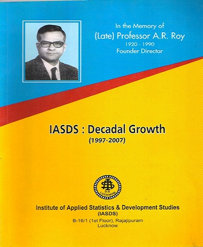

Late Prof. A.R. Roy
Founder Director/ Member Secretary
October 1985 to May 01, 1990
Professor Anadi Ranjan Roy
(1920-1990) took M.Sc. Degree in Pure Mathematics in 1942 and in Statistics in 1944, both from Calcutta University. After completing his postgraduate, he joined the Indian Council of Agricultural Research and rose to the position of Professor of Statistics there. During his stay at Calcutta, he had the privilege of being taught by Professor P.C. Mahalanobis, Professor R.C. Bose, and Professor P.K. Bose among others. Subsequently, he proceeded to USA for doctoral degree from Stanford University on a Fulbright Grant where he worked with several stalwarts including Professor Charles Stein, Herman Chernoff, and Meyer Girshick. His teachers and research associates/supervisors were highly impressed by his research work and potentials. In 1959, he joined the Department of Statistics, Lucknow University as Professor and Head and continued to hold the position till his retirement in 1980.
OUR PUBLICATION



ONGOING PROJECTS

End line Assessment of "To Improve the reproductive health of adolescent girls and women in age grou
on: 2023
Source of fund:
Vatsalya, Lucknow
OUR WORK IN VARIOUS STATES OF INDIA

|